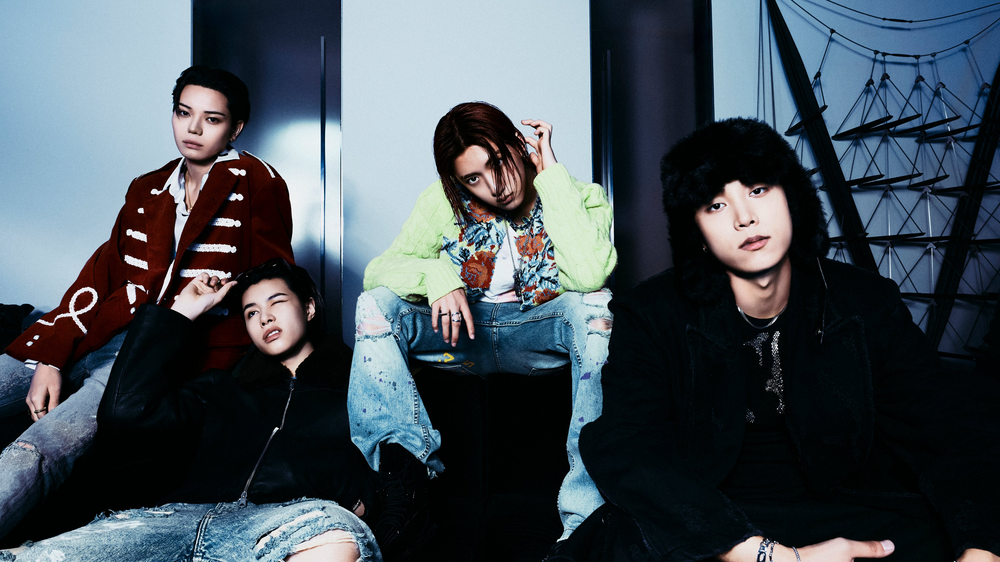

LNGSHOT (롱샷) adalah boy band asal Korea Selatan yang dibentuk oleh agensi More Vision (didirikan oleh rapper Jay Park). Terdiri dari empat anggota utamanya—Ohyul (sebagai leader), Ryul, Woojin, dan Louis—grup ini resmi debut pada 13 Januari 2026 melalui mini album perdana mereka yang berjudul Shot Callers.
Mengusung perpaduan musik K-pop, hip-hop, dan R&B, LNGSHOT dikenal dengan gaya bermusik yang berani, otentik, serta mendobrak pakem standar industri K-pop sejak awal kemunculan mereka.
Perjalanan mereka untuk menyapa penggemar telah dibangun secara matang sejak akhir tahun 2025. LNGSHOT memulai langkah awal mereka dengan merilis 4SHOBOIZ MIXTAPE pada bulan November 2025, yang disusul oleh singel pra-debut bertajuk "Saucin'". Sorotan media dan publik pun semakin menguat setelah keempat anggota LNGSHOT tampil memukau sebagai kejutan di panggung ajang penghargaan bergengsi Melon Music Awards (MMA) 2025.
Momen puncak yang dinantikan akhirnya tiba pada 13 Januari 2026, ketika LNGSHOT secara resmi melangsungkan debut mereka. Lewat mini album (extended play) perdana bertajuk SHOT CALLERS dan singel utama "Moonwalkin", grup ini sukses mempertegas identitas musik mereka yang berani mendobrak pakem standar industri K-pop tradisional.
Selamat datang di web Room4SHOT
Website ini adalah situs penggemar tidak resmi dan tidak berafiliasi dengan LNGSHOT maupun agensinya.